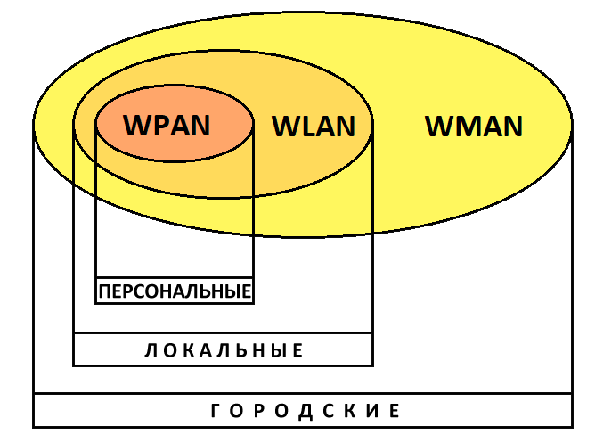

Б
е
с
п
р
о
в
о
д
н
ы
е
т
е
х
н
о
л
о
г
и
и
Беспроводные технологии — подкласс информационных технологий, служат для передачи информации между двумя и более точками на расстоянии, не требуя проводной связи. Для передачи информации могут использоваться радиоволны, а также инфракрасное, оптическое или лазерное излучение.
Существует множество беспроводных технологий, наиболее часто известных по маркетинговым названиям, таким как Wi-Fi, WiMAX, Bluetooth. Каждая технология обладает определёнными характеристиками, которые определяются её областью применения.
Виды беспроводных технологий в зависимости от дальности действия
-
Беспроводные персональные сети (WPAN — Wireless Personal Area Networks).
Примеры технологий — Bluetooth.
-
Беспроводные локальные сети (WLAN — Wireless Local Area Networks).
Примеры технологий — Wi-Fi.
-
Беспроводные сети масштаба города (WMAN — Wireless Metropolitan Area Networks).
Примеры технологий — WiMAX.
-
Беспроводные глобальные сети (WWAN — Wireless Wide Area Network).
Примеры технологий — CSD, GPRS, EDGE, EV-DO, HSPA, UMTS, LTE, LTE Advanced.

Подробнее про классификацию вы можете прочитать здесь.
Отличия проводных и беспроводных технологий передачи данных:
| Характеристика |
Проводные |
Беспроводные |
| Среда передачи |
Кабель |
Электромагнитные волны |
| Пропускная способность |
Высокая |
Низкая |
| Расстояния между точками |
Большие |
Ограниченные |
| Мобильность абонентов |
Не обеспечена |
Может быть обеспечена |